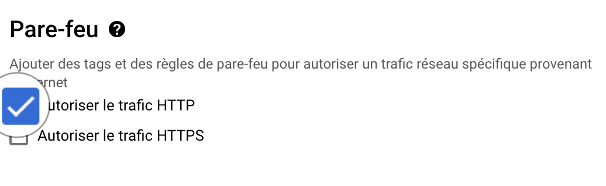
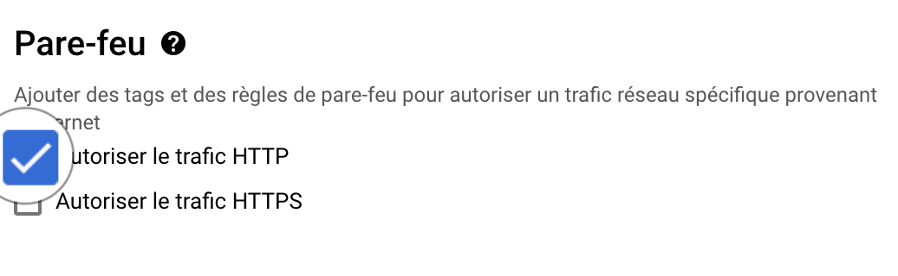
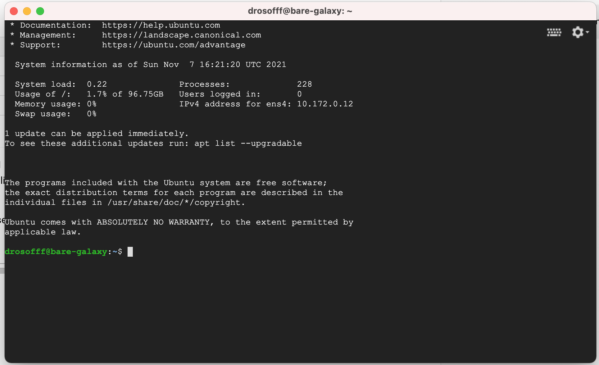

STANDALONE GALAXY IN GCP
1. Spin off a virtual Machine bare-galaxy with  Google Cloud Engine¶
Google Cloud Engine¶
-
Connect to your Google Compute Instances dashboard
-
Create a Virtual Machine Instance
with the following settings
- Name:
bare-galaxy - Region
europe-west6 (Zurich)(or any region available with you Google coupon). As it is very unlikely that a single Google zone will be able to provide enough resources to support 18 virtual machines at the same time, we will have to coordinate to distribute our instances to different zones in Europe and USA. - Zone:
europe-west6-a(or-bor-c) - Configuration de la machine
OPTIMISEE POUR LE CALCUL(orCOMPUTE-OPTIMISED) in case of trouble
in case of trouble- Série:
C2 - Type de machine:
c2-standard-8 (8 processeurs virtuels, 32 Go de mémoire)
- Disque de démarrage (Modifier)
IMAGES PUBLIQUES- Système d'exploitation:
Ubuntu - Version*:
Ubuntu 20.04 LTS - Type de disque de démarrage:
Disque persistant avec équilibrage - Taille (Go):
100 - SELECTIONNER
- Pare-feu
- Check
Autoriser le trafic HTTP
- Check
This settings should look like:

 

Trouble shouting¶
In some occasions, launching of your VM may fail as illustrated bellow:

Two possible fixes
-
Maybe you are not, indeed, using the billing account associated to your Google coupon, but instead using a billing account associated to a "Free Trial".
If this is the case, try either of the following solutions:
- If it is not already done, activate your coupon by following the received instructions, and be sure that you activate a project associated with the billing account of the coupon.
- Instead a selecting
OPTIMISEE POUR LE CALCUL(orCOMPUTE-OPTIMISED), selectUSAGE GENERAL(orGENERAL-PURPOSE) and scroll-down the Machine-type menu to selecte2-standard-8 (8 vCPU, 32 GB memory)
-
The Region and Zone which you have chosen (in the example,
europe-west6-a) is overloaded.In this case, try another
Zone(-b or -c), and/or anotherRegion, in Europe or America.
2. Connect to the VM using the ssh web console¶
ssh connection
Roll down the ssh menu in the control pannel and select the first option
Ouvrir dans une fenêtre du navigateur

This opens a web ssh shell session to control your VM:

3. Installation of the Galaxy server¶
In this first approach "bare Galaxy", everything is made as simple as possible:
-
We are going to become
rootunix user. This is required because installation of new programs as well as manipulations of network interfaces is permitted only to users with administration rights. -
We are going to check that all software needed to deploy galaxy are there (they are with Ubuntu 20.04 !)
-
Finally, we will run the automated deployment of Galaxy
So let's do this, step by step:
1.
This command open a new "shell" where you are root. You can check this by typingpwd that
should return /root/, meaning that you are now working in the directory of the root user.
2.
This command checks that the only 2 programs required for the deployment are already there3.
This command says to usegit to clone the code repository located at
https://github.com/galaxyproject/galaxy.git.
In addition the -b release_21.05 option specifies that only the version release_21.05
will be cloned locally in your virtual machine. You may try to visualize the URL
https://github.com/galaxyproject/galaxy.git
in your web browser. You will, literally, see the code of Galaxy. It is Open Source, as
you can notice.
4.
This command moves you in thegalaxy directory that was created by git and the
git clone command in 3.
5.
This command makes a copie of thegalaxy.yml.sample file to galaxy.yml - in the
directory config that is in the galaxy directory.
6.
Using this command, we are going to edit some important settings that are required to run our Galaxy fresh instance.
- Find the line (you can use the editor command Ctrl+W, paste the previous line and press enter)
and edit it to
By doing this, we ensure that we will be able to reach the galaxy web server on our virtual machine using the usual web port80.
- Find the line
delete the
#character and type your email address between the two single quotes.
Any email address is ok (admin@galaxy.org for instance). It is just used here as an admin identifier.
- save your changes by pressing the key combination Ctrl+O
- quit nano by pressing the key combination Ctrl+X
This part is optional but will save us 20 min of deployment !
Before starting the deployment of Galaxy, we are going to use a trick to bypass the step of compilation of html and javascript codes which are used to render the Galaxy graphic interface.
This is because modern web applications use a lot of cached code, speeding up the user experience. However, this implies that this code cache is built during the deployment of the application.
For Galaxy, building/caching the client codes for the web server takes about 20 min and this is increasing with newer galaxy versions.
To save us these 20 min, we are going to remove the web client folders and replace them by already built client folders, prepared by your trainer...
- Remove the web client folders
- Download the cached web client folders
- Uncompress the cached client folders
 this tip is optional. If you run the next command without doing it,
everything will go OK, but the
this tip is optional. If you run the next command without doing it,
everything will go OK, but the run.sh script will detect that the galaxy web page
are not built and it will do it. This takes about 10-15 minutes.
7. Ready for deploying Galaxy ?
Then type
and press the Enter key !You should see an abundant log scrolling down. Don't worry !
- All Galaxy dependencies required for the Galaxy server instance are being downloaded and installed
- The Galaxy computing environment is automatically set up
- the Galaxy web server is installed and static pages are built (this step specifically takes more and more time)
- The Galaxy database (sqlight) is automatically upgraded to its latest structure/model
- The package manager Conda, which is heavily used by Galaxy to install its tools is installed.
After 5-10 minutes, you should see in the log:
4. Connect to your living Galaxy instance¶
You should now be able to access to you Galaxy instance in a your web browser window.
- Go back to your Google Cloud Engine control panel.
- Find the
External IP address/Adresse IP externein the 7th column of the dashboard (to the left of the ssh menu that you used before). - Click on the hyperlink.
- In the new browser window, follow the menu
Authentification et enregistrement→Enregistrementand register to your instance using the email address you put in the galaxy.yml at step 3.6 -
After login, you should see the admin tab in the top menu of the Galaxy interface.
You are connected to Galaxy as an admin !